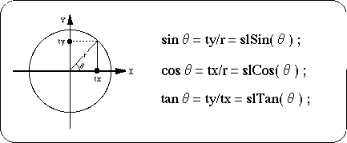
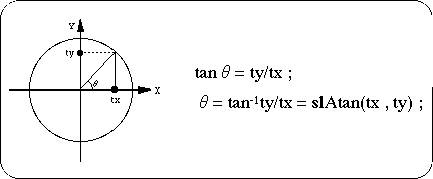

Return to previous page | Return to menu | Go to next page
11-2. Trigonometric functions
Introduces arithmetic functions related to trigonometric functions.
- 【FIXED slSin ( ANGLE angs ) ;】
- Returns the sine value for the specified angle (ANGLE type).
- 【FIXED slCos ( ANGLE angc ) ;】
- Returns the cosine value for the specified angle (ANGLE type).
- 【FIXED slTan ( ANGLE angt ) ;】
- Returns the tangent value for the specified angle (ANGLE type).
Figure 11-1 Trigonometric image

- [ANGLE slAtan (FIXED tx, FIXED ty);]
- Returns the angle in the specified direction.
Figure 11-2 “slAtan” image

This section introduces special arithmetic functions.
- [FIXED slCalcPoint (FIXED cx, FIXED cy, FIXED cz, FIXED * ret);]
- Multiplies the specified points in the current matrix and assigns the calculation result to the parameter “ret”.
- [FIXED slInnerProduct (VECTOR a, VECTOR b);]
- Takes the dot product of the vector between the specified parameters.
The return value shown in Figure 11-3 is returned.
Return to previous page | Return to menu | Go to next page